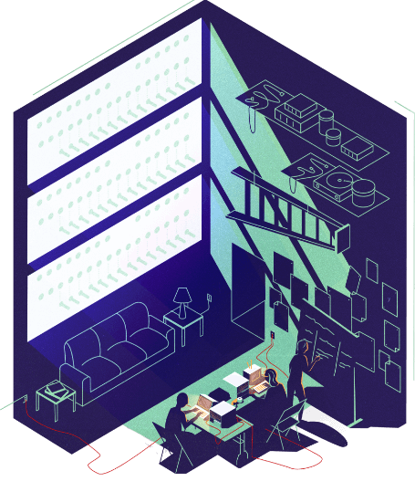
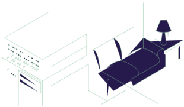

Subscribe to the podcast to receive new episodes as soon as we release them
Season 4, Episode 3
Personal Computers: The Altair 8800 and the Dawn of a Revolution

The Altair 8800 is why we have computers in most homes today. It was initially designed for hobbyists. But a few visionaries saw massive potential in this strange little machine—and worked hard to make others see it too. What they created led to so much more than anyone could have ever imagined.
Forrest Mims tells us how his co-founder, Ed Roberts, planned to save their struggling electronics company. His idea? A microcomputer made for hobbyists. That computer led to a fateful phone call from Bill Gates and Paul Allen. Dan Sokol and Lee Felsenstein recall the unveiling of the Altair 8800 at the Homebrew Computer Club, and how it sparked Steve Wozniak’s eureka moment for the Apple I. We then hear from John Markoff about an infamous software heist that set the stage for the debate about whether code should be proprietary. And finally, Limor Fried reflects on how this story continues to influence today’s open source hardware movement.
00:04 - Saron Yitbarek
It's a cold and frosty December afternoon in 1974. Two young men are walking across Harvard Square. They're probably having a conversation about their favorite subject, computers.
00:19 - Saron Yitbarek
As the men pass a newsstand, they see the blue lettering of Popular Electronics peeking out from the other magazines. They stop and check it out. On the cover is a photo of a metal box, with a dozen switches and small lights on the front. The headline reads, "World's first minicomputer kit. Altair 8800." The box doesn't look like much. Bare bones really, meant for hobbyists and tinkerers. But it looked like something more to these two guys. It looked like the machine they'd been waiting for, because they had the perfect software for this new hardware. At the same time, they were a little freaked out. What if others had the same idea they did and were working on it already? They had to move fast. The names of those two command line heroes? Bill Gates and Paul Allen. Little did they know that the Altair 8800 would be the gateway machine to a personal computer revolution. It would change their lives, and ours, forever. That new machine would do one other thing. It would kickstart the debate between free and proprietary software, with the help of a mysterious thief. Stay tuned.
01:50 - Saron Yitbarek
In episode 1 of our season on hardware, we learned about timesharing minicomputers, like the Eagle. In episode 2, we heard about the GE-225 mainframe. But both those machines were still limited by their size, cost, and processing power. This episode is about everything shrunk down, to the micro computer. It all starts with the DIY kits that were mailed to hobbyists, like the one that graced that fateful cover of Popular Electronics.
02:23 - Saron Yitbarek
Those simple kits inspired the revolutionary idea that computers could sit inside your own home. That computers were yours to own and experiment with. It was the birth of a new mass market piece of hardware. The personal computer. I'm Saron Yitbarek, and this is Command Line Heroes. An original podcast from Red Hat.
02:51 - Saron Yitbarek
Let's go back to the late '60s. Out to the New Mexico desert, where the Altair 8800 was born. A man named Ed Roberts had co-founded a small electronics parts company, MITS, which stood for Micro Instrumentation and Telemetry Systems. Through hobbyist magazines, they could sell gadgets to the new market obsessed with radio controlled airplanes and model rockets.
03:21 - Saron Yitbarek
By 1971, Ed was running the company solo. He decided to pivot toward electronic calculators—a brand new market at the time. MITS would offer the first hobbyist calculator. But Ed had miscalculated. Here's his original co-founder, Forrest Mims.
03:42 - Forrest Mims
Companies like Sony and Sharp and Texas Instruments, they were building professional pocket calculators, and selling them for cheaper than Ed could sell them. That created a near disaster. He was nearly bankrupt, and he didn't know what to do.
03:57 - Forrest Mims
Well, one day he learned about a new microprocessor that had been developed by Intel. It was advertised in Electronics Magazine. I still remember the ad. The microprocessor was called the Intel 8080.
04:09 - Saron Yitbarek
Ed got a great deal on a bulk purchase of Intel microprocessors, because nobody else was buying them at that point. Then he designed a full scale computer around that microprocessor.
04:23 - Forrest Mims
He called me one night and said, "Look, I've got a new product I want you to see." So I got on the bicycle and rode over to MITS. There was this blue box on a table. He said, "Well, here it is." I said, "Well, what is it?" He said, "It's a micro computer." I said, "You're kidding." He says, "Nope, it's a micro computer, and Popular Electronics has accepted it, and they want an article on it."
04:43 - Saron Yitbarek
Ed's goal was to create a very basic computer kit, for the same hobbyist market that had been into model airplanes and rockets. He would sell it mail order through Popular Electronics Magazine. When you received the kit, inside would be a bag full of metal parts, including a special tube that contained the all-important Intel 8080 microprocessor chip. Ed priced the whole kit at around $400.
05:14 - Forrest Mims
He had one question. He said, "How many do you think will sell?" Based on all the previous things that we sold through Popular Electronics, I said, "Well Ed, golly. Maybe a few hundred." He looked so sad when I said that. To this day I feel guilty. After that was in Popular Electronics Magazine, his parking lot in front of their little building was jammed with cars. They sold 5000 of those computers. It was named the Altair 8800. The name was dreamed up by the staff at Popular Electronics Magazine. Ed didn't know what to call it.
05:50 - Saron Yitbarek
The Altair 8800 was Ed Roberts' hail mary move to save his company, and it was the best decision he'd ever make. He didn't realize it at the time, but he'd done something truly significant. Because by placing the Altair in the open market, at an affordable price, he'd exposed his machine to a much larger audience than the hardcore electronic hobbyist crowd. His Altair opened up the potential for a whole new group of consumers—those who never imagined they could own a computer of their own.
06:28 - Saron Yitbarek
More than that, a computer of their own that they could tinker with. It was the start of something huge. But there was still one missing ingredient. Software. This hardware needed the right software to come alive.
06:51 - Saron Yitbarek
Back in Cambridge, Massachusetts, Bill Gates and Paul Allen had just spotted the Altair 8800 on the cover of the latest issue of Popular Electronics. Before they took that fateful walk across Harvard Square, Paul had been bugging Bill about those new Intel chips, the 8080s. He was looking for a way to create software using those chips.
07:16 - Saron Yitbarek
Bill and Paul programmed in BASIC. As we learned in our last episode, BASIC would never have been created and made popular if it hadn't been for the GE-225 mainframe. For Bill and Paul, BASICs’ simplicity made it an ideal language for something with restricted memory and processing power, like the 8080.
07:38 - Saron Yitbarek
When they saw that magazine cover, saw the Altair wrapped around that 8080 chip, they realized they could write software in BASIC that gave that machine legs. They quickly reached out to Ed Roberts at MITS. Forrest Mims remembers that call.
07:56 - Forrest Mims
Paul says, "We've got to call the company and tell them we've got BASIC," and Gates agreed. But Gates didn't want to do the phone call, because he had a much younger voice, and he looked like he was a teenager. Paul Allen makes the call to Ed and said, "We've got BASIC for your Altair." Ed says, "Well everybody's telling me they've got BASIC. If you've got BASIC, deliver it, and I'll consider it."
08:17 - Forrest Mims
They didn't have BASIC. So they spent a month borrowing computer time without anybody's knowledge from either MIT or Harvard, and they developed BASIC for the Altair without ever seeing one.
08:27 - Saron Yitbarek
Bill and Paul knew they could program the code for the Altair. But in reality, they hadn't even started. So yes, they worked day and night in marathon sessions to adapt BASIC for the machine. Using the published specifications, they created a simulator on a DEC PDP-10 mainframe, to emulate the Altair. Then they developed a BASIC interpreter.
08:53 - Saron Yitbarek
The Altair 8800 without a BASIC interpreter was essentially a metal box with switches and lights. Not very useful. With the addition of that BASIC interpreter though, suddenly the machine had a real future.
09:10 - Saron Yitbarek
Just a few weeks later in March, 1975, the code was ready. Paul flew to Albuquerque to hand deliver the demo to Ed Roberts. Bill was up the night before, to make sure they hadn't mis-coded anything. He punched out the final code onto paper tape, and gave it to Paul right before his flight. But 30,000 feet in the air, Paul realized, they forgot one thing.
09:39 - Forrest Mims
He realizes he had not developed the coder, or the bootstrap logger, that allows the computer to read the program. He wrote that code on the airplane. That's how brilliant Paul Allen was.
09:53 - Saron Yitbarek
Now he was ready. The next day was the demo. Paul was going to test their code on a real Altair for the very first time. Here's Bill Gates in an old video from 1994, talking about the moment Paul Allen loaded that paper tape at MITS.
10:13 - Bill Gates
The first time, for some reason it didn't work. The second time they loaded it in, it worked. Of course the simulator, it's very slow. Because you go through lots of instructions to a single instruction. So actually, the real machine, even though it's such a simple little microprocessor, was faster than our PDP-10 simulator. About five times faster.
10:32 - Bill Gates
So to Paul, when it finally came up and it said, "Ready," and he typed in a program, "Print two plus two," it worked. He had it print out squares and sums, and things like that. He and Ed Roberts, the head of this company, sat there. They were amazed by, this thing worked. I mean, Paul was amazed that our part had worked, and Ed was amazed that his hardware worked.
10:55 - Saron Yitbarek
Yes. Paul Allen and Bill Gates' BASIC interpreter worked like a charm on the Altair. An amazing accomplishment.
11:02 - Saron Yitbarek
Ed Roberts was impressed. He was so impressed that...
11:08 - Forrest Mims
He hired Paul Allen on the spot to be his vice president for software development.
11:13 - Saron Yitbarek
Paul Allen moved to New Mexico pretty soon after that to start his new job. As for Bill, he went back to Harvard. He was still a student after all.
11:23 - Forrest Mims
But Paul Allen convinced Gates to come back the summer of '75 and work with BASIC, and that's when they developed a company—they called it Micro-soft with a hyphen, Micro-soft. They eventually left out the hyphen.
11:36 - Saron Yitbarek
MITS became Bill and Paul's very first customer when it licensed their BASIC interpreter and agreed to distribute their code with the machine. They called the software Altair BASIC and it became the first piece of software bundled with a personal computer. Now they just have to sell the thing.
11:57 - Forrest Mims
What did Ed do? Well, they bought a big motorhome and made it into a traveling sales device, a traveling office to sell their computers. And they would drive this thing around the country and stop at different cities and have demonstrations and that attracted huge numbers of people.
12:12 - Saron Yitbarek
MITS-Mobile, as it was called, took the traveling road show out west. Up and down the California coast, in conference rooms packed with curious engineers and tinkerers. The team showed off the Altair and Altair BASIC. Then, at a stop in Palo Alto, in one particularly crowded hotel conference room, something unexpected happened. Something that changed the course of software history.
12:46 - Saron Yitbarek
Okay, hold up. Before we get to that unexpected something, I need to tell you about a group of electronic enthusiasts and hobbyists in the Bay area. They call themselves the Homebrew Computer Club. They trade parts, circuits and ideas, basically support each other as they explored this new world of personal computing.
13:11 - Dan Sokol
Everyone was curious. Most of the people, they were engineers of one type or another. There were only 2 or 3 people who had any knowledge of computer programming at all. I remember a survey, how many people here had a computer versus how many people intended to get one. And that was really interesting because everyone was interested, and there were only 1 or 2 people who actually had them. And they would bring them to the club meeting and show them off. And I remember that the embarrassing question of the era was, "What are you going to do with it?" And nobody had an answer.
13:46 - Saron Yitbarek
That's Dan Sokol, one of the original members of the Homebrew Computer Club. Their first meeting took place in a garage in Menlo Park and that meeting happened because everyone wanted to feast their eyes on the Altair 8800.
14:08 - Lee Felsenstein
So 30 people arrived at this garage on a rainy night on March 5, 1975. And there was the Altair sitting for us to look at. It was turned on, but of course it had nothing to connect to and didn't do anything.
14:22 - Saron Yitbarek
And that's Lee Felsenstein, another original member of the club.
14:27 - Lee Felsenstein
We just went around the room and found out what we could learn. We've had a kind of more of a report from Steve Dompier, a fellow who had ordered an Altair computer and it was announced in the January issue of the Popular Electronics Magazine. And he had actually driven down to Albuquerque to check on his order, then reported back to us what he had found.
14:48 - Dan Sokol
Dompier brought one in and he sat there programming it through this front panel of switches to get it to play music. And after spending about an hour doing it, somebody tripped on the power cord, and he had to start over. But at the time this was, "Look a computer—and you can afford it."
15:08 - Saron Yitbarek
There was someone else at that inaugural meeting. When he saw the Altair, it blew his mind, but not because he couldn't believe a machine like that existed. Quite the opposite. Because a machine like that, and much more than that, already existed. He'd built it. That man was the young Steve Wozniak. A friend of his had coaxed him to go to that meeting so that Steve could show off a video terminal he built. But everyone was fixated on the Altair instead. Steve had never heard of it. And he also hadn't heard of the Intel 8080 microprocessor that was making it hum. So he took home a datasheet, and it led to an incredible eureka moment.
16:01 - Saron Yitbarek
Here’s Steve Wozniak, “the Woz,” was speaking at the Homebrew Computer Club reunion back in 2013.
16:10 - Steve Wozniak
I took it home and studied it, and I said, “Oh my God, these microprocessors are one chip.” Might sell for $400, that was scary. One chip, that is all the computers I used to design on paper back in high school, and I'd actually built one of those five years before, myself, when I had to build a processor myself. There were no microprocessors.
16:31 - Saron Yitbarek
In our last episode, we learned how Woz started writing his own software in BASIC on the GE-225 computer in high school. Well, ever since high school, Woz had wanted a computer all his own. But to do that, he had to include a programming language that meant dedicating at least 4K of memory and human input and output to type in the programs. His machine had 256 bytes of solid state RAM and the chips for that were really expensive. So he designed a processor, refining it over and over while still in high school. It had switches to enter in ones and zeros, just like the Altair. But now he realized the Altair's microprocessor was the culmination of his vision.
17:24 - Steve Wozniak
You press the buttons one, zero, one, zero, one, zero, and you press a button and it goes into an address register and press some more ones and zeros, and it goes into memory and it goes into memory. You fill up memory and it's so exciting to hear how we did that with the Altair that was playing the music in our club, but I was past that and wanted a machine ready to use, but now what I would do is type the data in and it would go straight into memory. How much easier that was. I said, "Oh my gosh, my dream of having my own computer." That night, I saw the formula.
17:56 - Saron Yitbarek
That night, the image of the Apple 1 popped into Steve Wozniak's head. He could build his own fully usable computer for next to nothing by adding in a microprocessor to his terminal. And he had this idea that when his computer started up, it would run a program that would take in data that you typed into it, like a typewriter. No more switching ones and zeros. Add to that the video terminal he’d built to let programmers see what they were typing in and voila, a computer that felt more human. A useful personal computer that worked for normal people. Here's Lee Felsenstein again.
18:42 - Lee Felsenstein
He had already developed a little video terminal kind of adapter, which the generic term was a TV typewriter. You would hook it to a TV. And he was introduced to the processor chip, which was being sold for $25 each, and realized, "If I put this on a board with some memory, I could put that TV terminal on the board, too, and I'd have a computer that would have a video display," which he did and he was working on that while he would be in the meetings. When we moved to the Stanford Linear Accelerator Auditorium, he grabbed the only seat with an electrical outlet. He would always be there before everyone else. He was writing the BASIC program for the Apple 1. He started the Apple family of computers there.
19:34 - Saron Yitbarek
Once Woz finished building his computer, he was excited to show everyone at the club. He explained how a handful of chips could make an affordable personal computer. Woz was a big proponent of freedom of information, the sharing of knowledge to help build better systems and a better society. This echoed the club's open values and the social liberation movements of the time.
19:59 - Saron Yitbarek
So at the end of the meeting, he passed out the blueprints to his design, the hardware and the software, for free to everyone. He figured they could each use his plans to build their own $300 computer. But Woz's friend and business partner, a guy named Steve Jobs, quickly put an end to that idea. You see, Jobs had been traveling all this time and didn't realize Woz was giving away the design to the Apple 1. Jobs didn't share Woz's hacker mindset. He was more proprietary. Jobs soon convinced Woz that they should sell the computers instead.
20:42 - Saron Yitbarek
That ethical struggle between free and proprietary technology happened more than once at the Homebrew Computer Club. In fact, a few months after that inaugural club meeting, which had everyone gawking at the Altair, there was one more meeting that would light the fuse to this debate. It happened in the auditorium of the Stanford Linear Accelerator Center. At the end of that meeting, dozens of attendees rushed the stage to collect a program on paper tape, fresh copies of Microsoft's Altair BASIC, the new software that everyone was excited about.
21:21 - Saron Yitbarek
But how did those copies even exist? The software hadn't been fully released yet, so how did it end up at that Homebrew meeting? Turns out the original paper tape had been stolen. It was the great software heist of the decade.
21:44 - Saron Yitbarek
Okay. Let's dig into how this all came to be. Remember I told you about MITS-Mobile traveling out west to show off the Altair and Altair BASIC?
21:54 - John Markoff
The company was demonstrating their computer with their software in Palo Alto on June 10, 1975.
22:03 - Saron Yitbarek
That's John Markoff, journalist for The New York Times.
22:06 - John Markoff
And the hotel was called Rickeys. Remember, the personal computer industry didn't really exist then, and most of the people who were interested in personal computers weren't really business people, because there was really no business software, and so they were demonstrating the computer to a real eclectic group. There were lots of people around in the new Silicon Valley then who were electrical engineers, they were programmers. There were all kinds of people who were interested in technology and interested in computers.
22:39 - Saron Yitbarek
During that demonstration, one of the MITS crew was having trouble loading the software onto the machine. Keep in mind that at that time, software was punched onto paper tape and the tape had to be pulled through a mechanical reader to install the program. So while that employee was distracted and all eyes in the room were on the shiny new Altair, someone in the crowd spotted something else, a nearby cardboard box, and the opportunity of a lifetime. Inside that box were rolls of Altair Basic on paper tape. This person slid his hand into the box and wrapped his fingers around a long roll of paper tape. He pocketed it and left. No one saw a thing.
23:36 - John Markoff
Somehow that paper tape got to a semiconductor engineer who worked at a company called Signetics, whose name was Dan Sokol, and Dan, he was very technical and he was also someone who had gone to the original Homebrew Computer Club meetings. So Dan had access to a relatively high speed paper tape copying machine, and he made a bunch of copies. Dan to this day insists that he was not the person who took the original paper tape, but that he got a copy of it and then he brought it to the next meeting of the Homebrew Computer Club and he shared it with the members there.
24:17 - Dan Sokol
Amongst my nefarious activities, I am known as the world's first software pirate, and for a damn good reason. I'm the one who duplicated the MITS BASIC, the Microsoft BASIC paper tape. And how that came about was someone stood up at Homebrew and said, "Does anybody here have the capability to copy paper tapes?" And I raised my hand, and that's how I ended up with that tape and copied it.
24:45 - Saron Yitbarek
Lee was at that Homebrew meeting when Dan handed out his pirated copies.
24:51 - Lee Felsenstein
So what happened was that Dan Sokol made up 10 copies, we had it at the next meeting and said, "Here's copies of Altair BASIC. Now bring back more copies than you took."
25:02 - John Markoff
The deal was that if you got a copy, you had to make a copy yourself and share it with a friend. This was sort of uncharted territory. There was no personal computer software companies at that point, and so it was really kind of the wild west and people sold computers and they shared software at that point.
25:19 - Saron Yitbarek
This was 1975, and software was simply the stuff that you used to make computers work. Personal computing was a brand new concept. Hackers back then didn't have all the baggage associated with that word now. They just wanted to share their work to foster an open community with the free exchange of ideas and software. The heist and giveaway had set the stage for a debate that still resonates today. Should software be freely shared or should it be bought and sold? Well, Bill Gates certainly had an opinion on that. When he found out what happened to his software, he was furious.
26:03 - John Markoff
When he realized that his BASIC programming language was being widely shared by the hobbyists, he wrote this irate letter to them accusing them of stealing his software and undercutting his ability to make a living.
26:18 - Lee Felsenstein
Well, we got that letter. We read it in the meeting and there was one line in it saying, "It cost us a lot of money to develop this. We used almost $40,000 in computer time." Everybody in the room knew that computer dollars like that were phony. They were just an accounting trick. You didn't pay real money for them, and we were onto that, so we figured, "Complain away. We're going to keep doing what we're doing."
26:45 - Dan Sokol
He called us pirates and thieves. We tried to be reasonable and rational and explain to him that you can't sell a piece of software for $400 for a computer that costs $400. It's very difficult now in this day and age to look back and try and explain the mentality that they were working under, which was the minicomputer mentality, and minicomputers were used in industry, and we were just a bunch of hobbyists building our own computers from kits. The only piece of functional software was this BASIC interpreter, which pretty much acted as an operating system. There was no such thing as an operating system back in 1974 in these personal computers, and we couldn't get through to him. We couldn't explain to him that, "Sell us the manual for 100 bucks, and let us just take the software." He wasn't hearing any of this, and for years Microsoft software was overpriced and pirated, pirated terribly.
27:51 - Saron Yitbarek
The club members chose to ignore the letter. That's because back in 1975, copyright laws didn't cover software. There was no penalty for copying the software from one paper tape to another. That would change in 1977, but for a couple of years there, no law was being violated.
28:12 - John Markoff
The irony here of course is that Bill Gates didn't create the BASIC language. He simply created a copy of it, taking it from its original designer who was a professor at Dartmouth University and basically making a copy and then selling it, so it all had its roots in sharing.
28:31 - Saron Yitbarek
The heist, the tape, sharing, the angry letter. All of that led to a decades long war between the burgeoning software industry and those they considered pirates, but out of that struggle grew the open source software movement. Its core values are cut from the same cloth as those early hobbyists who ignited the personal computer revolution, because those hobbyists realized that the key to the future of personal computing lay in unleashing the potential of software.
29:07 - Lee Felsenstein
The process of passing the tapes around and encouraging and building upon each other's results is really what made the personal computer industry.
29:17 - Saron Yitbarek
Now, we never did say who the original thief was, the one who made the heist of that precious paper tape. That's because it's still a mystery to this day. Those who know prefer to keep it that way.
29:32 - Dan Sokol
As far as how it was liberated, if you want to use that word, I know who did it, and I will not say because that person has asked a long time ago, to remain anonymous because it was safer, and so I have honored that and I will continue to honor that. So no, I was not at Rickey's, but the paper tape found its way to me.
30:01 - Saron Yitbarek
In time, the personal computer revolution gave way to Silicon Valley and multitudes of VC-backed tech startups, but those tinkerers, those electronic enthusiasts and hobbyists, they never went away. In fact, they're stronger than ever.
30:20 - Limor Fried
Hi, my name is Limor Fried, and I'm lead engineer and founder of Adafruit Industries.
30:26 - Saron Yitbarek
Adafruit is an open source hardware company, part of a new revolution that started up in the past few years, the open source hardware movement, and this movement shares the same values of those early hobbyists. But it's gotten even better.
30:43 - Limor Fried
The Homebrew Computer Club, I think, had that philosophy where people were coming in with their computers, and it was a little bit like, "Check this cool hack I did," and then everyone was like, "Damn, that's cool. Okay, next month I got to bring something better." And that is a positive feedback cycle that brings really good technological innovation. I think that hacker philosophy still exists. People have just more background and so what they think of as a cool hack has really, I want to say improved, but it has diffused, and I think that's good. But I think the values of sharing are still there and helping each other and working together and cooperation. That thread has passed through. I mean, it's in the entire open source community.
31:32 - Saron Yitbarek
We're going to dedicate a whole episode to the emergence of the open source hardware movement so we can see how we've evolved and made space for modern makers like Limor Fried. Stay tuned for that, episode 6, in a few weeks time. But next episode, it's the discs that changed the world—floppies.
31:56 - Saron Yitbarek
Command Line Heroes is an original podcast from Red Hat. Head on over to redhat.com/commandlineheroes for some great research on the personal computer revolution. There's a beautiful anecdote you can read there about Bill Gates visiting Ed Roberts on his deathbed, and if you want to know what happened during that PC revolution, check out our very first couple of Command Line Heroes episodes for the whole story, the OS wars. I'm Saron Yitbarek. Until next time, keep on coding.
Further reading
First Invite to the Homebrew Computer Club by Fred Moore
The Altair story; early days at MITS by Forrest M. Mims III
WIRED article on the Altair by Randy Alfred
Video: Demo of the Altair by Don Russ
PC Mag article on Altair by Michael J. Miller
Bonus episode
Forrest Mims had a lot to say about Ed Roberts. Hear more stories about Ed's meeting with Paul Allen and Bill Gates, and the partnership they started.
Get the newsletter
After each episode drops, we'll send you commentary from the Command Line Heroes team, as well as links that help you take a closer look at the topics we cover. It's as simple as that.
Presented by Red Hat
For 25 years, Red Hat has been bringing open source technologies to the enterprise. From the operating system to containers, we believe in building better technology together–and celebrating the unsung heroes who are remaking our world from the command line up.